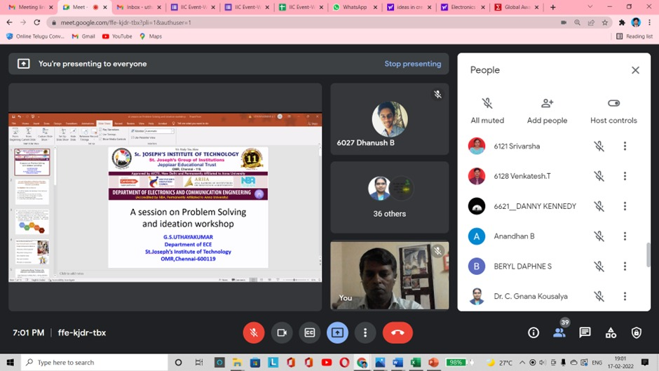
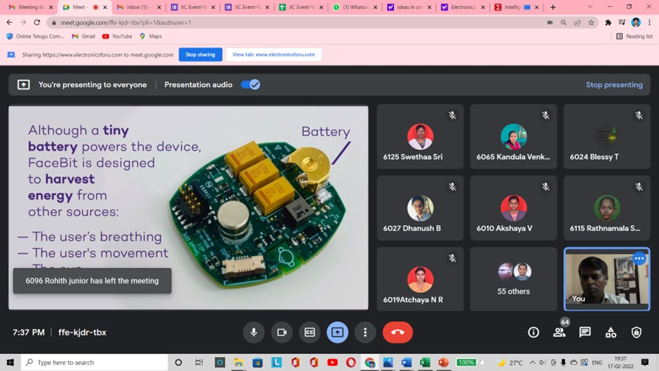
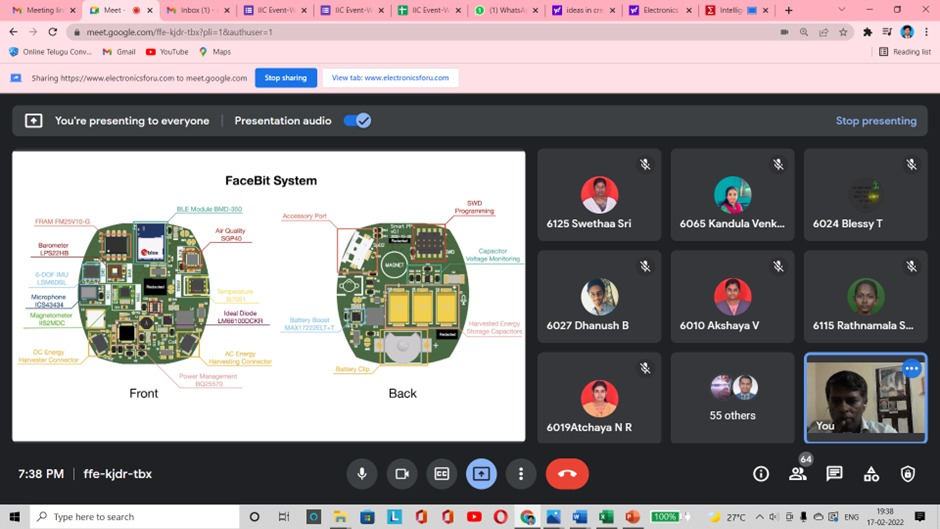
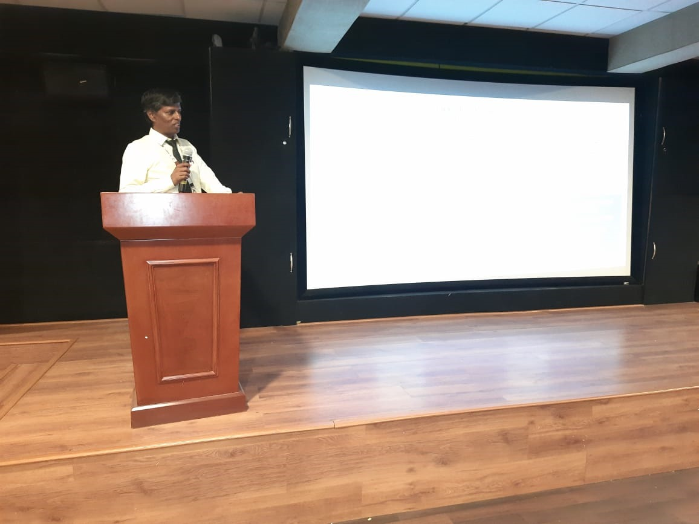
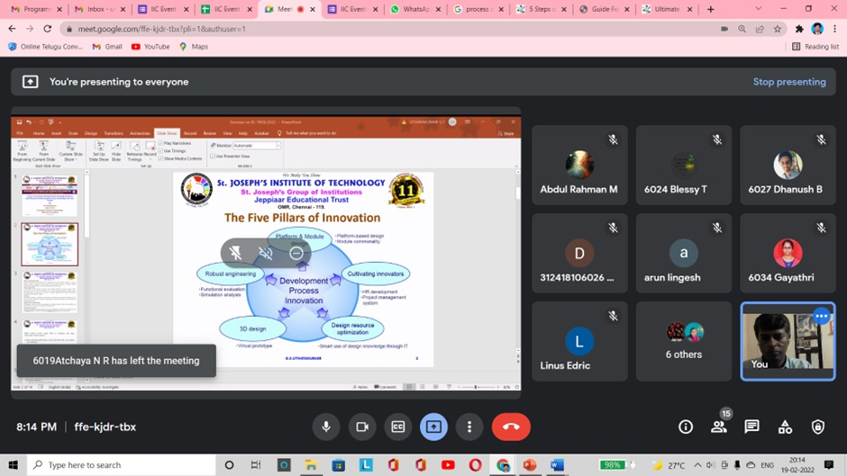

CAREER SUMMARY
I am basically an Electronics and Communication Engineer with M.B.A(Marketing) and
M.E.(Medical Electronics) and completed Ph.D in College of Engineering, Anna University.
I have 31 years of experience in various fields in IT over 12 years of design and
development
experience and in teaching I have 20 years of experience. I have published more than 30
international journal papers and presented papers at various international and national
level
conferences in different engineering colleges. I have initiated various IEEE technical
student
branch chapters such as Communication Society, Antenna and Propagation Society, Industrial
Electronics Society, Engineering in Medicine and Biology Society, Broadcast Technology
Society, Computer Society, Computational Intelligence Society and Control Systems Society
in our college.





EDUCATION DETAILS
| Name of the Exam |
Board/University |
School/College |
YOP |
Percent % |
Class |
| S.S.L.C |
BSE,TN |
GHSS, Podaturpet |
1984 |
76 |
First |
| H.S.C |
BSE,TN |
GHSS, Podaturpet |
1986 |
78 |
First |
| B.E.(ECE) |
Madras University |
APEC, Melmaruvathur |
1990 |
68 |
First |
| M.B.A. |
IGNOU |
New College |
2001 |
B-Grade |
First |
| M.E. |
Anna University |
CEG, Guindy |
2010 |
B-Grade |
First |
| Ph.D. |
Anna University |
CEG, Guindy |
2019 |
B-Grade |
First |
| M.S.W |
IGNOU |
Gurunanak College |
2021 |
B-Grade |
First |
| H.D.I.N.C.C. |
NIIT |
NIIT, Parrys |
1998 |
61 |
First |
| Name of the Employer |
Designation |
Period |
Experience |
| St.Joseph’s Institute of
Technology,Chennai-119
|
Associate Professor |
01.06.2019 to till date |
3 |
03 |
25 |
| St.Joseph’s College of
Engineering,Chennai-119 |
Associate Professor |
01.08.08 to 31.05.19 |
10 |
10 |
00 |
| Lord Venkateshwaraa
Engg. College,
Puliyambakkam |
Vice Principal |
01.08.06 to 31.07.08 |
2 |
- |
00 |
| HOD-ECE |
12.08.05 to 31.07.06 |
- |
11 |
19 |
| Kalsar College of
Engineering,Chennai |
HOD-ECE |
11.08.04 to 11.08.05 |
1 |
- |
00 |
| Infotronics and
Compucontrols Pvt.,Ltd,
Chennai |
Project-Manager |
27.05.99 to 10.08.04 |
5 |
2 |
13 |
| S & S Systems, Chennai |
Proprietor |
02.03.94 to 26.05.99 |
5 |
2 |
24 |
| Utility Engineering,
Chennai |
Service Engineer |
03.01.94 to 01.03.94 |
0 |
2 |
02 |
| Medal Marketing, Trichur,
Kerala |
Service Engineer |
30.10.92 to 30.10.93 |
1 |
- |
- |
| Mekaster Electronics
Service Centre Pvt.Ltd.,
Chennai |
Executive Engineer |
01.04.92 to 01.07.92 |
- |
3 |
- |
| Indian Engineering
College, Nagakoil |
Assoc.Lecturer |
01.05.90 to 01.03.92 |
1 |
10 |
- |
| Total |
|
31 |
10 |
03 |
Total Teaching Experience : 20 Years 4 Months 2 Days
Total Industrial Experience: 11 Years 6 Months 1 Day
21 years of teaching experience :
- Two years at Kalsar College of Engineering, Chennai
- Five years at Lord Venkateshwara College of Engineering, Kanchipuram
- Eleven years at St.Joseph’s College of Engineering, Chennai-600119
- Three years at St.Joseph’s Institute of Technology,Chennai-600119
Departmental Activities :
- ➢ Time table in-charge
- ➢ Placement in-charge for department
- ➢ Guest Lecture in-charge
- ➢ Industrial visit in-charge
- ➢ Students workshop in-charge
Organization : Infotronics and Compucontrols Pvt.Ltd.,
Period of Work : From May'99 to Aug’04
Designation : 'Project Manager'
Organization : S and S Systems, Chennai
Period of Work : From Mar' 94 to May' 99
Designation : Proprietor
Significant Achievements
- Completed 50 projects successfully and implemented at client place.
- Meeting client and finding the exact requirement and providing
solutions.
- Selection of 450 candidates from different locations for Domestic
and Overseas assignments.
Significant achievement during Execution of the project
- Insist upon the right to select key project team members.
- Select key team members with proven track records in their fields.
- Develop commitment and a sense of mission from the outset.
- Have key team member's assist in decision-making and problem
solving.
- Develop realistic costs, schedules, end performance estimate and
goals.
- Seek to eliminate the image of the project in viewpoint of the
client.
- Avoid over reliance on a particular type of control tool.
KEY RESPONSIBILITIES
- Guiding the trainees in project development.
- Selecting subordinates to domestic and Overseas.
- Identify the right teams and motivating them in the project.
- Correcting errors in coding & Adding new features.
- Optimizing for execution of speed or program size.
- Reconfiguring the software to solve a similar related package.
- Comparisons of current 'as-is' operations with potential 'to-be'
charted with confidence.
- Making pricing decisions
- Determine the 'mix of employees skills' to meet the corporate
objectives.
Roles and Responsibilities
- Responsible for developing intranet and custom applications for the
'Supervision and
regulation' department in order to assist in the supervision and control of
various banks
- Designed and developed intranet applications in Java, using the server stream
and web
logic application server and a MS SQL database.
- Maintained the department intranet on a daily basis using(HTML, JavaScript,
DHTML,
Photoshop and Acrobat).
- Provided one-on-one as well as group tutoring to help students of introductory
and
intermediate level in CS and Physics classes in C++, Algorithms, and Digital
Systems.
Mentored students on Java++ pointer manipulation, sorting, searching and graph
algorithms and NP Completeness.
- Responsible for pre-sales technical support for a J2EE / Services Oriented
Architecture
product
- Involved in preparing presentations, demos, proof of concepts, technical sales
material,
and sales tools such as ROI, and Architecture Maturity
- Managed NT 4 servers operating as file/print/application servers. Initiated
UNIX-NT
integration. Responsibilities included writing PERL scripts for
accounts/Directory
synchronization and performing daily administrative tasks such as directory
replication,
backups, and domain management. Installed FTP and HTTP servers and a UNIX shell.
- Worked on proof of concepts on using the Wakesoft Architecture Platform to
deliver
service-oriented applications on BEA web logic and IBM WebSphere.
- Work with prospective customers giving presentations, helping in evaluations,
and
technical training.
- G.S.Uthayakumar1
, Shankar Nayak Bhukya2
, Mohan M3
, Neel Kamal4
, N. R.
Medikondu5
, Penumuchi Bujji Babu6
, Asiful Hansari Saikh7
, Mohammad. A Islam8
, Hana beyene Mamo9
< href="">“Cloud Computing architecture for Linear Thermal Effects of
Photovoltaic Energy Systems” International Journal of Photoenergy, accepted for
publication. Impact factor: 2.535
- . V. Senthil Nayagam1
, G.S.Uthayakumar2
, V. Devaraj3
, Vinjamuri Venkata
Kamesh4
,R. Vijaya Kumar Reddy5
, E.Abdul.Al.Ammar6
, A.S.Mohammed
Metwally7
, M.Ataul Islam8
, Haiter Lenin Allasi9
< href="">“Hybrid Deep Learning Model for
the Performance Enhancement of Super Solar Charging Batteries” International
Journal of Photoenergy, accepted for publication. Impact factor: 2.535
- G.S.Uthayakumar, F. Albinus Sagay Tomson and R. Ashwin "Remote Detection for
the Presence of NH3, CO2, CH4, H2S, CO and other Toxic Gases at Various
Locations in a Sewer to Alert the User" International Journal of Advanced Research in
Science,
Communication and Technology (IJARSCT) Volume 4, Issue 2, April 2021
- G.S.Uthayakumar "Light transport in a fibril film sheet" International Journal
of
Electronics and Communication Engineering (IJECE) ISSN(P): 2278-9901; ISSN(E):
2278-991X Vol. 9, Issue 5, Jul–Dec 2020; 33–42
- G.S.Uthayakumar "Novel bio-electrode for human body signal detection"
International Journal of Electronics and Communication Engineering(IJECE)
ISSN(P): 2278-9901; ISSN(E): 2278-991X Vol. 10, Issue 1, Jan–Jun 2021; 7–16
- G.S.Uthayakumar "Novel wheel chair for physically challenged using IoT"
International Journal of Electronics and Communication Engineering (IJECE)
ISSN(P): 2278-9901; ISSN(E): 2278-991X Vol. 10, Issue 1, Jan–Jun 2021; 17–26
- G.S.Uthayakumar "Li-Fi integrated to power-lines for smart illumination cum
communication" International Journal of Electronics and Communication
Engineering
(IJECE) ISSN(P): 2278-9901; ISSN(E): 2278-991X Vol. 10, Issue 1, Jan–Jun 2021;
27–44
- G.S.Uthayakumar < href="">"EMG monitoring system" International Journal of Research in
Engineering and Technology ISSN (P): 2347–4599; ISSN (E): 2321–8843 Vol. 9,
Issue 5, May 2021, 27–44
- Shejolinvijai V. N., Santhosh Dharmaraj. A and G. S. Uthayakumar, "Health
Support System for Diabetes Prevention Using IoT and Networked Health Monitoring
Equipment", International Journal of Advanced Research in Science,
Communication and Technology (IJARSCT) Volume 4, Issue 2, April
2021,pp.10-39
- R. Sharine1 , J. Sharon2 and G. S. Uthayakumar “Early Stage Disease Diagnosis
Using Human Nail In Image Processing” International Journal of Advanced Research
in Science, Communication and Technology (IJARSCT) Volume 4, Issue 1, April
2021
- G.S.Uthayakumar, A.Sivasubramanian “Characterization and parameterization of
Medicinal Drugs using Analytical techniques and Monitoring of human body
tissues” Arabian Journal for Science and Engineering,Vol.39,pp.5861-5872,2014
Impact factor : 2.334
- G.S.Uthayakumar, S.Senthilkumar, S.Inbasekaran, A. Sivasubramanian, S. Justin
Packia Jacob, “Nano-particle analysis for various medicinal drugs and human
body saliva at macromolecular level” Appl Nanosci 5,563–568 (2015).
- Pressia Shilpa Raj A, Vaishali T, Pugazh Germanus, G.S Uthayakumar "Invisible
Sensors In Atmosphere" , International Journal of Industrial Electronics and
Electrical
Engineering (IJIEEE) , Volume-2,Issue-8 ( Aug, 2014 )
- G.S.Uthayakumar, A Sivasubramanian "Biomedical optical analytical techniques to
analyze the medicinal drugs and optical properties of tissues" International
Journal of Biomedical Engineering and Technology, Vol.12,pp.36-59,2013
- G.S.Uthayakumar,J.Chanduru, A.Sivasubramanian, ”Biomedical Optical
spectroscopy techniques for Diagnosis of Human saliva sample” Asian Journal
of Biomedical and Pharmaceutical Sciences 3 (24), 12- 21,2013
- G.S.Uthayakumar, A.Sivasubramanian, S.Inbasekaran, S.Senthil, T.P.Sastry,”
WAN enabled super system for Nano-biomaterials packages for bio-products
and bio-materials Scientists” .International Journal of Biomedical and Advance
Research 4 (9), 592-596, 2013
- G.S.Uthayakumar, S Inbasekaran, R Senthil, S Sekar, B Santoshkumar, A
Sivasubramanian, “Novel Design of Low Voltage DC Source for Bio Nano
Diagnostic Applications” International Journal of Advanced Biomedical
Engineering Research (IJABER) 1 (1),2013
- . G.S.Uthayakumar, A.Sivasubramanian “Characterization and Quantization Of
Medicinal Drugs Using Biomedical Optical Spectroscopy Methods”
International Journal of Engineering Research & Technology 2 (2), pp.1-10,2013
- G.S Uthayakumar, A Sivasubramanian “A novel technique to monitor human body
vital signs” International Journal of Biomedical and Advance Research 4 (9),pp.
642-
651, 2013
- G.S Uthayakumar, A Sivasubramanian “Fiber Optic Transillumination Imaging
System and Human Body Relations” Open Access Scientific Reports 1 (7), 1-6
- G.S.Uthayakumar, A Sivasubramanian “Characterization of Medicinal Drugs
using biomedical optical techniques” International Journal of Biomedical
Engineering and Consumer Health Informatics, ISSN: 0973-6727 (Vol.4 ,No.2
2012). Pages: 43-50
- R Seetharaman, GS Uthayakumar, N Kumaravel "Mobile phone antennas and
its radiation patterns" IEEE Transactions on Electromagnetic Interference &
Compatibility, 2008. INCEMIC 2008, Page(s):355 - 360
- R Seetharaman, GS Uthayakumar, N Kumaravel ”Mobile phone usage and
cancer” IEEE Transactions on Electromagnetic Interference & Compatibility, 2008.
INCEMIC 2008, Page(s):627 – 632
- G.Rajendran , T.T. Srinath, and G.S.Uthayakumar < href="">“A study on perceptions of
entrepreneurial potential of PG Engineering students of Anna University”
Published
in SEDME (Small Enterprises Development, Management & Extension Journal) 2002
29:2, 1-18
| TITLE |
REF.NO. |
DATE |
IPR DETAILS |
| Sensor circuit for lung vital signs |
Granted |
25.05.2022 |
397583 |
| Human Body Signal Biosensor |
CBR.No.7983 |
05.05.2014 |
2238/CHE/2014 |
| Fiber Optic Transilluminator |
Waiting for Grant |
07.03.2014 |
1184/CHE/2014 |
| Skin Film ECG Electrode |
CBR.No.13253 |
18.07.2014 |
3542/CHE/2014 |
| Spectrasoft |
CBR.No.14960 |
13.08.2014 |
3978/CHE/2014 |
| Algal based Thin film sheet for
vitiligo treatment |
CBR.No.15039 |
14.08.2014 |
3994/CHE/2014 |
| Cardiac electric field and
magnetic field strength
estimation in the esophagus |
202041001574 |
14.01.2020 |
Filled |
| Wireless sensor network using
lora wan technology to monitor
the construction site remotely |
202041001630 |
14.01.2020 |
Filled |
Presented a paper at National Level
- “Reliability, specificity, sensitivity of caries detection using FOTI” at 2nd
National
conference on VLSI, Communication and Networks(VCAN2010) in Eswari
Engineering College,Chennai-89 from 12.03.2010 to 13.03.2010
- “Fiber optic Transillumination” at National conference on Recent Trends in
communication at Annai Mathammal Sheela Engineering College, Namakkal-637013
from 11.02.2010 to 12.02.2010.
- “FOTI imaging system for caries detection” at National conference on “
Embedded,
Microwave & Integrated Technologies” in Saveetha College of Engineering, Chennai
Sponsored by DOE, Board of Research in Nuclear Sciences on 12.03.2010.
- G.S.Uthayakumar, R.Niranjana, P.Nithya, ”Human body vital signs monitoring
using
a wearable device” National Conference Emerging Trends in Information and
Communication Engineering(NCETICE’22) organized by Department of Electronics
and Communication Engineering in association with IEEE Student chapter at CARE
College of Engineering during 6,7 May, 2022.
- G.S.Uthayakumar,Akshya Raghu, Gayathri.R, ”A remote raw water monitoring and
control system”, ISTE sponsored National level conference on Emerging trends in
Engineering design and Manufacturing (ETEDM’22) on 15th and 16th June 2022
Presented a paper at International conference
- “Mobile phone antenna and its radiation pattern” at 10th International
conference on
Electromagnetic interference and compatibility (INCEMIC-using FOTI systems” ,
Bangalore.,10th International conference held from 26.11.2008 to
27.11.2008,pp.355-
360;
- “Mobile usage and its cancer” at INCEMIC, NIMPHAN convention centre,
Bangalore.,pp.627-632.
- “Early cancer detection using human body waste(Nails)” 3
rd International conference
on Recycling and Reuse of Materials-ICRM-2014,11-13 April 2014.
- “Monitoring of drugs at molecular level using FTIR” 3rd World congress
Biotechnology,13-15 Sep.2012 Hyderabad International convention Centre.
- Attended a DAE-BRNS sponsored National Laser Symposium(NLS-20) at Crystal
growth centre, Anna University, Chennai from 09.01.2012 to 12.01.2012.
- “Monitoring of human body tissues at molecular level using FOTI systems” 8th
International symposium on Bioinformatics Research and applications,21-23 May
2012, University of Texas at Dallas, Texas,pp.133-147.
- “Invisible sensors” International conference on Computer Science & Information
Technology held at Chennai on 10th May 2014.
- G.S.Uthayakumar, ”Early detection of cancer using human body waste(Nails)” at
3rd
International conference on Recycling and Reuse(ICRM-2014), organized by
M.G.University, Kottayam, Kerala and Wroclaw University of Technology, Faculty
of
Electrical Engineering, Poland from 11.04.2014 to 13.04.2014.
- Attended SPICON 2016 at SPIN Chennai on the theme “Energizing delivery paradigm
in a digital world” held from 18.11.2016 to 19.11.2016.
- G.S.Uthayakumar,”IoT for monitoring Chiropractors” at 7th Euro-India
International
conference on Holistic Medicine 2017,15.09.2017 to 17.09.2017 at Institute of
Holistic
Medical Sciences, Kottayam, Kerala and Ayurdeda-Und Venen –Klink,Austria.
- G.S.Uthayakumar, ”Natural Plants as Modulators of Apoptosis” ,10-12.11.2017 at
Euro-India International Conference on Experimental and Clinical Medicine at
Mahatma Gandhi University, Kottayam, Kerala, India and Bioagile Therapeutics
Pvt.Ltd., Bangalore from 10.11.2017 to 12.11.2017
- G.S.Uthayakumar, K.Deepasaravani “Smart Sensors Based Human Emotion
Recognition” in VI INSTITUTE OF TECHNOLOGY and Won First Prize.
- G.S.Uthayakumar, K.Deepasaravani “Real Time Human Emotion Recognition by
Smart Sensors” in Thanthaiperiyar Government Institute of technology and Won
First
Prize.
- G.S.Uthayakumar, K.Deepasaravani “Automatic Human Emotion Recognition using
smart sensors” in Sri Lakshmi Ammal Engineering College and Chendu college of
engineering and technology.
- G.S.Uthayakumar, K.Deepasaravani “Automatic Recognition of Human Emotions
using ECG signals” in International conference organization of science and
innovative
engineering and Technology conducted by OSIET & SRI RAMANUJAR ENGINEERING
COLLEGE, Chennai.
- G.S.Uthayakumar, Irene Nisha, “Implementation of Home Monitoring System Using
IoT” International conference at Jeppiaar Engineering College, ICONSTEM 2017,
23-24th
March 2017,Chennai
- G.S.Uthayakumar, Santosh D and Shijolin V “Health support system for diabetic
prevention
using IOT and networked health monitoring equipment” International conference on
Research in
Electronics and Communication Techniques (ICREACT 2021) at SRM Institute of
Science and
Technology,Vadapalani,Chennai held on 3rd and 4th May 2021.
- R. Sharine, J. Sharon and Dr. G. S. Uthayakumar, Early Stage Disease Diagnosis
Using
Human Nail In Image Processing.
- G.S.Uthayakumar,Reena Sherin D, Pavithradevy I, ”Wearable microstrip patch
Antenna
for IoT Applications” First International conference on Management,
Entrepreneurship,
Science and Engineering(ICAMESE 2022) organized by I Business Institute Greater
Noida,UP,India on 28th and 29th May 2022.
Achievement :
- Increase in intake of the college from 300 to 540
- Started R & D Centre for doing projects inside the campus.
- Selected 150 employees in all the areas
- Acted two academic semesters as Anna University Theory Examinations
Chief
Superintendent.
- Established new lab for ECE, Civil, Mechanical Engineering
departments.
- Established new hostel building for Girls and Boys separately at
two different locations.
- Solving problems at various levels then and there.
- Result produced in ECE department of LVEC: 30 % to 66 %.
- Result produced in ECE department of KCE: 10% to 50%.
Other Achievement :
- Chaired a session at International Conference on Technological convergence for
Information, health, food, Energy 2015, CLRI, Chennai on 2nd May 2015
- Chaired a session at 3
rd International conference on Recycling and Reuse (ICRM-2014),
M.G.University, Kottayam, Kerala from 11.04.2014 to 13.04.2014
- Chaired a session at 7
th Euro-India International conference on Holistic Medicine 2017,
from 15.09.2017 to 17.09.2017 at Institute of Holistic Medical Sciences,
Kottayam, Kerala.
- Chaired a session at Euro-India International conference on Experimental and
Clinical
Medicine at M.G.University, Kerala during 10.11.2017 to 12.11.2017.
- Received appreciation certificate from IEEE Madras Section for Professional
achievement
award for the year 2016.
- Delivered an invited lecture on 25.11.2014, Short term training course on
“Prospects and
challenges in Fermentation and downstream processing” sponsored by Department of
Biotechnology, India at St.Joseph’s College of Engineering.
- Delivered an invited lecture at Anna University sponsored 6-days FDP on
Transmission
Lines and RF Systems on the topic “Power and Impedance Measurement on Lossless
transmission line on 19.11.2019.
- Delivered an invited lecture at Anna University sponsored 7-days FDP on
“Embedded and
Real Time systems” held at St. Joseph’s Institute of Technology on 22.05.2017.
- Reviewer in the IEEE Seventh International conference on “Bio signals, Images
and
Instrumentation” organized by SSN College of Engineering held on March
25-27,2021.`1
PROJECTS APPLIED AT SERB :
- Fabrication of Optical Nano biosensor for climate change analysis, Core
Research Grant,
Rs.96,49,000 on 25.03.2022.
- FABRICATION OF MICRO SUPERCAPACITOR FOR BIODEVICES, Industry Relevant R&D,
Rs.29,00,900 on 31.07.2016.
- 5-G micro-strip patch Antenna design for osteoporosis diseases identification,
Intensification of Research in High Priority Areas (IRHPA), Rs.18,60,000 on
18.12.21.
- IEEE Funds received from various society’s during 2008 to 2018 Rs.5,00,000.
MEMBERSHIP OF PROFESSIONAL BODIES :
- Life member of Biomedical Engineering Society of India from
2010
- IEEE member from 2008
- IEEE Senior Member from 2017.
- Professional for the following Technical Societies
- IEEE Antenna and Propagation Society
- IEEE Antenna and Propagation Society
- IEEE Engineering in Medicine and Biology Society
- IEEE Industrial Electronics Society
- IEEE Signal Processing Society
- IEEE Broadcast Technology Society
- IEEE Robotics and Automation Society
- Faculty Advisor for the following Societies
- ➢ Electron Devices
- ➢ Antenna and Propagation Society
- ➢ Engineering in Medicine and Biology Society
- IEEE Technical council members for the following
- ➢ Nanotechnology council
- ➢ Sensor council
- ➢ Biometrics council
- ➢ Young Professional
- ➢ Potentials
- ➢ Superconductivity
Attended International Workshop :
- Attended International workshop on Biomedical Sciences and Technologies during
2-
4th March 2011” (IWBMIT-2011) at Anna University, Chennai-25.
- Attended International workshop on “Opto electronics Sensors and its
applications at
Fomra Institute of Technology,Chennai-103 held on 25.03.2010.
- Attended International workshop on “Opto electronics Sensors and its
applications at
Fomra Institute of Technology,Chennai-103 held on 25.03.2010.
- Attended one day conference on the theme FICCI E-Commerce Summit 2017 on
01.12.2017.
- Attended 42nd Annual International Conference of the IEEE Engineering in
Medicine
and Biology Society from 20.07.2020 to 24.07.2020 EMBS Virtual Academy.
Attended National Workshop :
- Attended a MHRD sponsored National workshop on “MAT lab and its applications”
at NITTR, Chennai from 01.12.2007 to 02.12.2007.
- Attended Quality Improvement programme MHRD/AICTE sponsored summer school
on “Biomedical Electronics” from 04.08.2008 to 09.08.2008 at NITTTR, Chennai.
- Pre-conference workshop on “FPGA based Embedded processor overview NIOS-II” at
Anna university, Chennai-25 on 07.05.2008.
- Attended one day workshop on “SPSS package for Research Analysis” sponsored by
TEQIP-CEG, Anna University,Chennai-25 on 08.12.2006.
- Attended Mission 10X workshop on “High Impact Teaching Skills” from 06.04.2009
to 07.04.2009 at SSN College of Engineering, Chennai.
- National Video workshop on common “Gastrointestinal surgeries” at Madras
Medical
College, Chennai from 10.03.2012 to 11.03.2012.
- Attended CSIR Sponsored National workshop on “Healthcare Technology and Recent
trends in E-Health and M-Health from 01.11.2012 to 02.11.2012 at Prathyusha
Institute
of Technology and Management.
- Attended 2-day workshop on “Simulation and Modeling of Nano-electronic Devices”
held from 07.03.2013 to 08.03.2013 organized by SRM University, Kattankulathur,
Chennai.
- Attended a technical workshop titled “Concepts and design of PWM controller and
data
logger using Embedded System” organized by IEEE RAS Madras chapter at IEEE
Madras section on 30.10.2014.
- Five Days workshop on “High Performance VLSI Architectures for Digital Signal
Processing”, 30.04.2018 to 04.05.2018 at IIITDM, Kanchipuram.
- Completed Industrial visit on “Automation & Robotics” conducted by
AGIIT-Chennai
in association with Panimalar Engineering College on 14.11.2019.
- Attended India Technology Week program from 13th May 2020 to 15th May 2020
organized by EFY Group.
- Attended one-week online workshop on “Importance of Routing & Switching in
Data Communication and Networking –A closer Look” from 15.06.2020 to
20.06.2020 organized by IEEE Communication Society, SNIST Cisco Networking
Academy, SIST, Hyderabad, India.
- Attended Virtual National workshop on “Research Scopes in Remote Sensing” from
24.06.2020 to 26.06.2020 organized by St.Joseph’s College of Engineering,
Chennai.
- Attended Three days International Tech Summit titled “Next Generation Smart
Machines(NGSM v1.0)” from 27.07.2020 to 29.07.2020 organized by Karunya
Institute
of Technology and Sciences, Coimbatore.
- Attended three days Industry Boot Camp(Technology Demystified) from 15.07.2020
to 17.07.2020 organized by St.Joseph’s College of Engineering, Chennai.
- Attended IEEE R10 POCO -2020 online workshop organized by IEEE Madras section
10.10.2020 to 11.10.2020.
- Attended AICTE sponsored STTP on “Research and Development in wireless
Communication Application using NetSim and MatLab” organized by Pondicherry
Engineering College from 23.11.2020 to 28.11.2020.
- Attended AICTE sponsored STTP on “EMI/EMC Compliances-Approaches &
Techniques for product development” organized by S.A.Engineering College,
Chennai through online from 25.11.2020 to 01.12.2020.
- Attended AICTE sponsored STTP on “SciLab: an Effective Open Source Tool for
Computer Vision and Machine Learning” organized by Vidya Jyothi Institute of
Technology, Hyderabad through online from 14.12.2020 to 19.12.2020.
- Attended AICTE sponsored STTP on “FPGA based Digital System Design with
HDL(Phase I) from 25.01.2021 to 30.01.2021, at Vel Tech Multi Tech Dr.Rangarajan
Dr.Sakunthala Engineering College, Chennai.
- Attended AICTE sponsored STTP on “ FPGA based Digital System Design with
HDL(Phase II) from 08.02.2021 to 13.02.2021, at Vel Tech Multi Tech
Dr.Rangarajan
Dr.Sakunthala Engineering College, Chennai.
- Attended AICTE sponsored STTP on “FPGA based Digital System Design with
HDL(Phase III) from 22.02.2021 to 27.02.2021, at Vel Tech Multi Tech
Dr.Rangarajan
Dr.Sakunthala Engineering College, Chennai.
- Attended AICTE sponsored STTP on “Emerging trends and Research challenges in
Next generation wireless Networks” organized by Kongumadu College of Engineering
and Technology(Autonomous) through online from 29.03.2021 to 03.04.2021.
- Attended AICTE sponsored STTP on “FPGA based Digital System Design with
HDL(Phase IV) from 03.05.2021 to 08.05.2021 at Vel Tech Multi Tech Dr.Rangarajan
Dr.Sakunthala Engineering College, Chennai.
- Attended AICTE-QIS six days STTP on “Artificial Intelligence and 5-G
Communication Technology” organized by Department of Electronics and
Communication Engineering,Poornima College of Engineering Jaipur held from
26.04.2021 to 01.05.2021.
- Attended Innovation Ambassador training (Foundation Level) conducted by
MoE’s�Innovation Cell & AICTE during the period 30th June 2021 to 30th July 2021
through online
mode.
Attended the Webinar Series During Covid-19 Lockdown Duration :
- Attended “Redefining the leadership in virtual environment - innovation to
Transformation” by Elets techno media on 4th May 2020 between 5:30 to 6:30pm.
- Attended national webinar on “covid-19 yesterday, today and tomorrow” presented
by
Padmashree. Dr.T.V.Devarajan organized by RMK college of engineering, Chennai.
- Attended a programme on “In conversation with Padma Shri A S Kirankumar”
through online on 09.06.2020.
- Attended a webinar on “NP completeness” at VIT, Chennai on 17th June 2020 .
- Attended a webinar on “Marine Robotics-Its design and Applications at SRM
Institute
of Science and Technology on 13th June 2020
- Attended a webinar on “Post Covid-19 Role of Science and Technology towards a
self�Reliant India” organized by IEEE India Council on 19.05.2020.
- Attended a webinar on Higher & Technical Education Virtual Conclave, West India
2020 on 19.06.2020 organized by eLets Technomedia and Digital Learning, India.
- Attended a “International Yoga Day” organized by Eduoxia Research Centre on
21.06.2020.
- Attended a “Industry Boot Camp(Technology Demystified)” organized by
St.Joseph’s
College of Engineering on 21.06.2020.
- Attended a webinar on “Electronic Wastes-Emerging Threat to the Environment” by
Dr.R.Murugan, N.I.T, Silchar, Assam by IEEE Product Safety Engineering Society,
Madras Chapter on 26.06.2020.
- Attended a Industry Boot Camp(Technology Demystified)” from 27.06.2020 to
28.06.2020 organized by St.Joseph’s College of Engineering, Chennai.
- Attended a virtual international seminar on “Cognitive Computing and ADHD”
technically sponsored by IEEE CIS Madras chapter on 26.06.2020.
- Attended a webinar program on the topic “What is business and how to do it” by
Ms.Indumathi, Technical Consultant & Mentor at LETFIX on 27.06.2020 organized by
Jeppiaar Institute of Technology, Chennai.
- Attended a webinar program on the topic “What is business and how to do it” by
Ms.Indumathi, Technical Consultant & Mentor at LETFIX on 27.06.2020 organized by
Jeppiaar Institute of Technology, Chennai.
- Attended a International webinar on “Frontiers in Nanotechnology and
Applications(FINA 2020) organized by St.Xavier’s College, Palayamkottai on
15.07.2020.
- Attended a One-day National webinar on “Understanding Covid-19 Pandemic:
Personal & Institutional preventive” on 19.07.2020 organized Maulana Abul Kalam
Azad Institute of Asian studies, Kolkata.
- Attended a Tech talk webinar series : “Fighting Covid-19” by Dr.Celia Shahnaz,
IEEE
Bangladesh Section.
- Attended a webinar on “Recent trends in Optical Communication” organized on
08.08.2020 IETE Chennai Centre.
- Attended a webinar on “Lesson from 35 years successful Entrepreneurial Journey”
by
Shri Ashank Desai on 08.08.2020 organized i-Hub series.
- Attended a webinar on “New age technologies creating young age Entrepreneurs
globally” by Dr.R.R.Sonde on 16.08.2020.
- Attended a webinar on “AI in Everyday Life –Treat or opportunity” on 04.12.2020
organized by BVICAM, New Delhi.
- Attended a IEEE Day 2020 organized by IEEE Madras Section, Chennai on
18.10.2020.
Faculty Development Programme
- Attended FDP on “Semiconductor Devices & Analog Circuits” organized by IEEE
Madras section at IIT, Madras from 24.11.2007 to 25.11.2007.
- Attended MHRD/AICTE sponsored summer school on “Biomedical Electronics” at
NITTTR, Chennai from 04.08.2008 to 09.08.2008.
- Attended Anna University sponsored FDP on “Electromagnetic Fields” at
Rajalakshmi Engineering College from 26.11.2012 to 02.12.2012.
- Attended Anna University sponsored FDP on “Graph theory and its applications”
at
St.Joseph’s College of Engineering, Chennai from 27.05.2016 to 03.06.2016.
- Attended Anna University sponsored FDP on “Artificial Intelligence” at St.
Joseph’s
College of Engineering, Chennai from 05.01.2016 to 12.01.2016.
- Attended Anna University sponsored FDP on “Design and Analysis of Algorithm” at
College of Engineering, Anna University from 25.11.2015 to 01.12.2015.
- Attended one day FDP on “Pursuing Emerging Technologies” at CTS, Chennai on
26.05.2018.
- Attended Anna University sponsored FDP on “Pattern Recognition and Artificial
Intelligence” at Rajalakshmi Engineering College, Chennai from 05.06.2018 to
12.06.2018.
- Attended Anna University sponsored FDP on “Computer Networks” at Jeppiaar
Engineering College, Chennai from 24.04.2019 to 30.04.2019.
- Attended AICTE sponsored two weeks FDP on “Smart perspectives of IoT on 5-G
Communication–Practical approach at Panimalar Engineering College from
08.11.2019 to 21.11.2019.
- Attended two days national level FDP on “Advancements in Materials Science”
organized by Science club from 05.06.2020 to 06.06.2020 Jeppiaar Institute of
Technology, Chennai.
- Attended one day FDP on “Role of Technology in a post Covid World” on 12th June
2020 organized by RMK Engineering College, Chennai.
- Attended FDP on “Labview on Communication systems and Signal Processing”
from 01.12.2020 to 05.12.2020 organized by Vel Tech Multi Tech Dr.Rangarajan and
Dr. Sakunthala Engineering College, Chennai through online.
- Attended FDP “Preparing students for 21st century skills & Competencies in new
normal education – (NI-way)” on 10.07.2020 organized by SRM Institute of Science
and Technology, Vadapalani campus.
- Attended “One month online International Training Program on Research
Manuscript Drafting and Publishing” from 06.07.2020 to 06.08.2020 organized
Eudoxia Research Centre, India.
- Attended One week FDP on the topic “Recent Trends in 5G Communication Design
and Technologies” at Rajalakshmi Engineering College, Chennai from 05.07.2022 to
09.07.2022.
- Attended two weeks FDP on the topic “Advanced Optimization Techniques and
hands�on with MATLAB/SCILAB (AOT 2022)” from 8th Aug 22 to 19th Aug 22.
Supported
by Ministry of Electronics and Information Technology (MeitY) Electronics & ICT
Academies at MNIT Jaipur, NIT Patna & IIITDM Jabalpur.
- Mentor for MHRD sponsored “Smart India Hackathon 2019” from 02.03.2019 to
03.03.2019 at Gurunanak Institute of Technology, Kolkata.
- Attended IEEE student branch officers meet on 20.09.2014 at IEEE Madras
section.
- Attended IEEE student branch officers meet on 22.08.2015 at IEEE Madras
section.
- Attended IEEE student branch officers meet on 05.02.2017 at Anna University
Campus,Chennai.
Guest Lectures organized at St. Joseph’s Institute of Technology
- Dr.Jey Veeraswamy Director of Computer Science and Engineering, University of
Texas, Dallas, USA, delivered a lecture on the topic “Life as a software
Engineer” on
27.10.2021 through online mode.
- Mr.S.Sudhakar, Deputy Director ,Controls and Digital Era, UR Rao Satellite
Centre,
Bangalore on the topic “Spacecraft Electronic Systems” on 01.11.21.
- Mr.E.Ramesh, Associate Vice President, HCL,USA delivered a lecture on the topic
“Artificial Intelligence in Real Life” on 28.10.21.
- Dr.Subhasis Bhaumik, Professor, Aerospace Engineering and Applied Mathematics,
Indian Institute of Engineering Science and Technology(IIEST), Shibpur delivered
a
lecture on the topic “Augmented Reality and Virtual Reality” on 30.10.21.
- Dr.A.Noor Mohamed, Associate Professor, IIIT-DM, Kanchipuram delivered a
lecture
on the topic “Approximate Computing” on 09.06.2020.
- Dr.Muttan, Professor of Eminence, Centre for Medical Electronics, Anna
University,
Chennai delivered a lecture on the topic “IoT and Health Care” for 2nd year ECE
students on 24.08.22.
- Mr.Frederick Fotsch, STEM Education Manager, Texas Instruments, USA delivered a
lecture on the topic “Importance of STEM Education using Electronic Systems” on
22.09.22.
- Mr. V. Rajaram, Chief Executive Officer, NAVYA INSIGHTS, Chennai delivered a
lecture on the topic “5G Technology 360 Degree Perspective” on 02.07.2019.
- Mr. J. Santhanakrishnan, Dy. General Manager, BSNL, Chennai, Visiting Faculty,
NIT,Nagaland delivered a lecture on the topic “Sensor Networks and its
Application”
on 03.07.2019.
- Mr. H.R.Mohan, Chair, ACM, Chennai delivered a lecture on the topic “Recent
Trends
in IOT” on 15.07.2019.
- Dr. P.A.Manoharan, Chairman-IEEE Madras Section, Director, Robotics Innovations
Pvt. Ltd., Chennai delivered a lecture on the topic “Robotics and Automation on
17.07.2019
.
TAUGHT THE FOLLOWING SUBJECTS AT UG & PG LEVEL
Digital Electronics
Communication Theory and Systems
Microprocessor and its application
Digital Signal Processing
Optical Communication and Networking
Distributed Computing System
Neural Networks
Digital Image Processing
Operating Systems
Basic Electrical and Electronics Engineering
Electromagnetic Fields
Transmission Lines and Wave guides
Medical Electronics
Professional Ethics
Environmental Science and Engineering
Principles of Management
Engineering Economics
Total Quality Management
Electronic Circuits-I & II
Electric Circuits and Electron Devices
Antennas and Wave Propagation
Sensors and Signal Conditioning